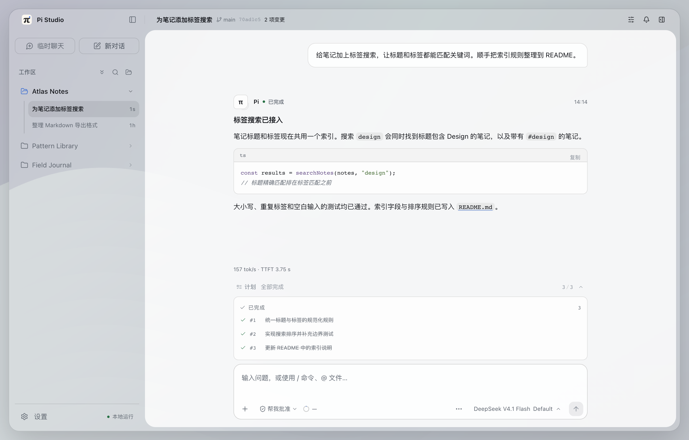

macOS 桌面 Agent 工作台
Pi Studio 桌面工作台
从一句需求，到一次可以核对的改动。
让 Agent 阅读项目、修改代码、运行测试。左边讨论实现，右边打开文件，逐行核对它做过的改动。

工作流 / Atlas Notes
一条搜索需求，
怎样落到代码里？
我们做了一个演示笔记本。用户想用 #design 找到相关笔记。从改索引到核对结果，你可以跟着这轮对话走一遍。


工作区外观
同一次对话，
两种光线。
用同一条对话对照浅色与深色。留意代码、任务列表与输入框的层次，以及壁纸透过侧栏后的变化。

项目工具
把常用的工具，
带进同一个窗口。
我的 Mac 该下载哪个安装包？
Apple 芯片选择 arm64.dmg，Intel 芯片选择 x64.dmg。打开磁盘映像，将应用拖入「应用程序」。查看首次安装说明 ↗
开始对话前，需要准备什么？
在「设置 → 模型配置」里添加服务地址和凭据，启用一个模型。新建对话，选择项目文件夹与工具权限后即可开始。
项目、会话和凭据存在哪里？
文件保存在你选择的工作区，Studio 在本机管理会话与设置。凭据由系统加密保存。使用远程模型时，请求会发送到配置的提供方。了解数据与权限 ↗